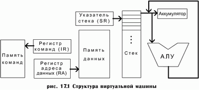

Структура виртуальной машины.
Последней фазой компиляции является генерация кода. Результатом выполнения этой фазы обычно является программа в выполняемых кодах той ЭВМ, на которой она должна выполняться. Однако в ряде случаев в качестве выходного языка транслятора используют ассемблер. В данной работе мы будем генерировать программу на языке ассемблера. Чтобы облегчить написание генератора кода и освободить его от посторонних соображений, связанных с конкретными особенностями какой-либо ЭВМ, будем использовать гипотетический процессор (виртуальную машину). Этот процессор не существует на самом деле (в аппаратном виде). При выборе его архитектуры требовалась максимальная простота и, в то же время, возможность легко выполнять на нем программы на языках, реализуемых в процессе выполнения лабораторных работ и курсового проектирования. Особенностью архитектуры является то, что все действия выполняются только над элементами в вершине стека, результаты операций также помещаются в вершину стека (рис.17.1). Поэтому в арифметических и логических операциях нет необходимости в указании адреса операндов. Если операция имеет 2 операнда, то ее выполнения подразумевает перенос элемента из вершины стека в регистр-аккумулятор и «понижение» на один элемент вниз указателя стека. Второй операнд, оказавшийся в вершине стека, подается непосредственно в АЛУ. Результат операции помещается в вершину стека вместо него.

Команды:
LIT const - засылка
константы в стек
LOAD n - поместить
переменную, размещенную по адресу n в вершину стека
STO n - запись
значения из вершины стека по адресу n (присваивание)
JMP k - безусловный
переход к команде, расположенной по адресу k
JEQ k - переход к
команде, расположенной по адресу k в случае
равенства двух верхних элементов стека
JLT k - переход к
команде, расположенной по адресу k если элемент в
вершине стека меньше следующего за ним элемента стека
JLE k - переход к
команде, расположенной по адресу k если элемент в
вершине стека меньше или равен следующему за ним элементу стека
JGT k - переход к
команде, расположенной по адресу k если элемент в
вершине стека больше следующего за ним элемента стека
JGE k - переход к
команде, расположенной по адресу k если элемент в
вершине стека больше или равен следующему за ним элементу стека
JNE k - переход к команде, расположенной по
адресу k в случае неравенства двух верхних элементов стека
ADR - содержимое
регистра адреса данных помещается в вершину стека
STAD - содержимое вершины стека помещается в
регистр адреса данных
ADD - сложение двух верхних элементов стека,
результат помещается в вершину стека
MUL - умножение двух верхних элементов стека,
результат помещается в вершину стека
SUB - вычитание элемента в вершине стека из
следующего за ним элемента стека, результат
помещается в вершину стека
DIV - деление на элемент в вершине стека
следующего за ним элемента стека, результат помещается в вершину стека
AND - логическое "И" (логическое умножение)
двух верхних элементов стека, результат помещается
в вершину стека
OR - логическое "ИЛИ" (логическое сложение)
двух верхних элементов стека, результат помещается
в вершину стека
XOR - сложение по модулю 2 двух верхних
элементов стека, результат помещается в вершину
стека
NOT - инверсия элемента в вершине стека
NOP - пустая операция
Пример генерации кода
|
Исходная программа |
Постфиксная запись |
Мнемокод |
|
var a,b,c |
a b c |
LIT 5 |
|
a=5; |
a 5 = |
STO 1 |
|
b=7+a; |
b 7 a + = |
LIT 7 |
|
c=a*b; |
c a b * = |
LOAD 1 |
|
|
|
ADD |
|
|
|
STO 2 |
|
|
|
LOAD 1 |
|
|
|
LOAD 2 |
|
|
|
MUL |
|
|
|
STO 3 |